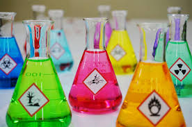

Prevention
It is better to prevent waste than to treat or clean it up after it has been created.
Greetings! We are team Xu, dedicated to the pursuit of the coexistance of a green environment and future scientific discoveries. In this website, we will provide some definitions and applications with digestable content. Enjoy your stay!
What is Green Chemistry?
According to the Unites States Environmental Protection Agency (EPA), Green Chemistry is designing and processing chemical substances with minimal production of hazardous waste. This includes all aspects of a chemical product, from its life cycle, design, manufacture, use, and ultimate disposal. Principles of Green Chemistry There 12 principles identified by Paul Anastas and John Warner in 1998 that fall under green chemistry. Here is a summary of the 10 most importat ones. It includes the ff: It is better to prevent waste than to treat or clean it up after it has been created. Synthetic products should maximize the use of all materials used for the final product. Always prioritize safety over quantity when handling chemical solutions. Synthetic products should be made with zero toxic byproducts in mind. Products should be made for maximum performance with the least amount of toxicity in mind. Auxiliary substances (e.g., solvents, separation agents, etc.) should be avoided when not necessary. It is economically practical to ensure raw materials or feedstocks are renewable rather than mortal. Chemicals should be designed to be degradable after its intended use. Real-time pollution monitoring efforts should be practiced when handling hazardous materials. Chemical products should be choosen with safety in mind for possible accidents like releases, fires, explotions, etc. Applications
Prevention
Atom Economy

Less Hazardous Chemical Syntheses
Designing Safer Chemicals
Safer Solvents
Design for Energy Efficiency
Renewable Feedstocks
Designing for Degredation
Polution Prevention
Accident Prevention